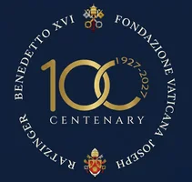
Caminos de fe, esperanza y caridad
© L’Osservatore Romano
En vísperas del centenario del nacimiento de Joseph Ratzinger / Benedicto XVI, el Centro Ratzinger de la Universidad de La Sabana convoca a este encuentro académico internacional — un espacio de reflexión sobre la vigencia de un pensamiento que ha sabido dialogar con la modernidad sin renunciar a la verdad.
Este congreso ha sido incluido entre las diez iniciativas mundiales seleccionadas por la Fundación Vaticana Joseph Ratzinger-Benedicto XVI para profundizar en su legado intelectual y espiritual, posicionando a la Universidad de La Sabana como referente académico latinoamericano en el estudio de la teología ratzingeriana.
Hacia el equilibrio entre progreso técnico, moral y religión. La "razón abierta" de Ratzinger en diálogo con la ciencia y la responsabilidad moral.
La esperanza cristiana como respuesta al nihilismo. Relación entre verdad y libertad, el compromiso cristiano en el mundo político.
La doctrina social de Benedicto XVI a León XIV. La caridad como fuerza principal para el desarrollo de los pueblos.
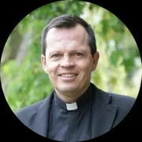
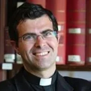
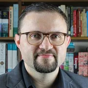
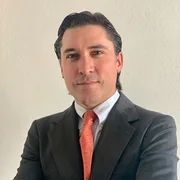
Inscripciones abiertas para ponentes, asistentes e investigadores de todo el mundo.
Tu aporte sostiene el Congreso y las becas para sacerdotes de la Maestría en Teología. En el formulario de donación selecciona la opción 3 “Becas Fondo Pedro María”.
Ponentes internacionales
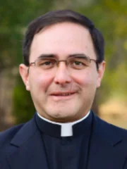
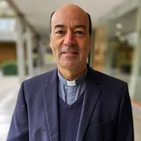
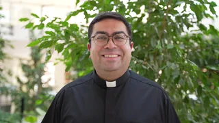
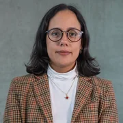
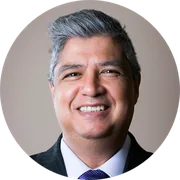
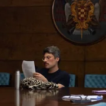
Ponentes nacionales y regionales
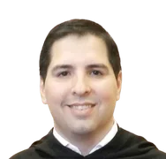
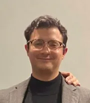
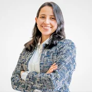
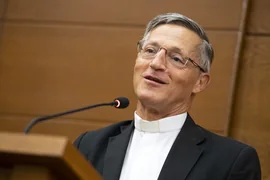
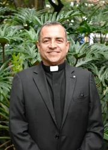
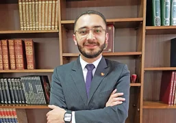
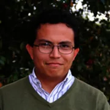
Tráiler del congreso y producción de la Facultad de Filosofía y Ciencias Humanas
Avanzar el legado ratzingeriano en diálogo con las problemáticas contemporáneas, ofreciendo análisis y propuestas a la luz de su pensamiento: la razón iluminada por la fe, el diálogo entre ciencia y teología, y la centralidad de la persona humana.
Ser un referente global en teología interdisciplinar, brindando ideas pertinentes que animen a las nuevas generaciones a aportar propuestas orientadas hacia un futuro mejor para la humanidad y el ambiente.
El Centro suscita el diálogo interdisciplinar entre teología, ciencias humanas, sociales, tecnología y cultura contemporánea. Organiza congresos y seminarios internacionales; impulsa la elaboración de artículos, tesis e investigaciones doctorales; y promueve la movilidad estudiantil y la cooperación con redes de investigación a nivel global.
El Centro promueve el Semillero "Cooperadores de la Verdad", integrado por estudiantes y egresados con voz en el Consejo Académico y derecho de coautoría en publicaciones derivadas de sus proyectos de investigación.
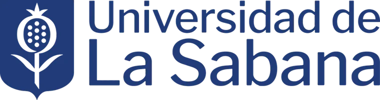
Adscripción Facultad de Filosofía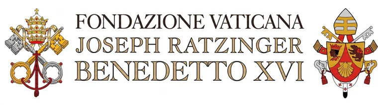
Red internacional Fundación Vaticana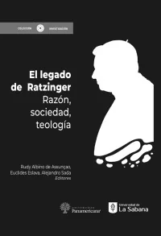
Sus escritos confrontan al hombre y a la mujer de hoy tanto en el ámbito intelectual como en el existencial. Con prólogo del cardenal Kurt Koch y epílogo de Tracey Rowland, este volumen ahonda en el legado de Ratzinger desde tres áreas interdisciplinares: razón, sociedad y teología. Entre sus autores, dos ganadores del Premio Ratzinger —Pablo Blanco y Tracey Rowland— y el editor de su última publicación, Elio Guerriero.
Ver publicación →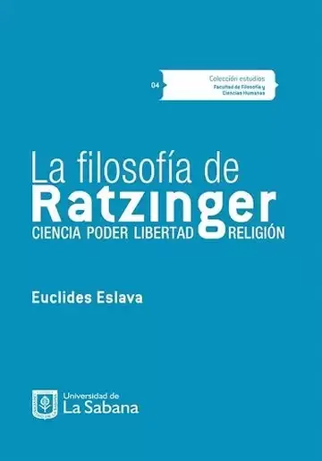
Cada vez se reconoce más la importancia del pensamiento de Joseph Ratzinger para el mundo contemporáneo. Este libro profundiza en su pensamiento filosófico —obras anteriores a su elección como obispo de Roma— articulado en cuatro áreas: la ciencia y la fe, el poder y la política, la libertad y la ética, la religión y el diálogo intercultural.
Ver publicación →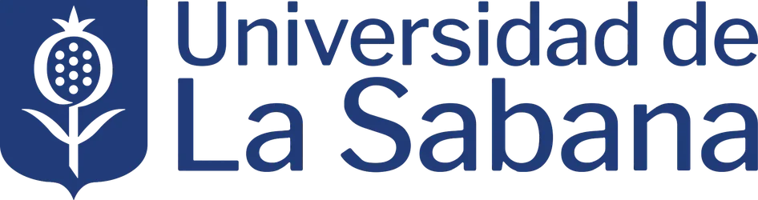
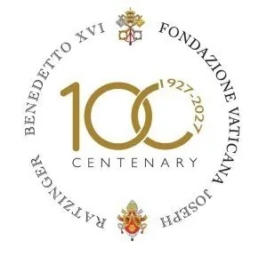
Universidad de La Sabana · Campus Chía, Colombia
La Universidad de La Sabana es una institución de educación superior de inspiración cristiana, con Acreditación de Alta Calidad del Ministerio de Educación de Colombia. Su campus principal se extiende sobre más de 200 hectáreas en la sabana de Bogotá, en Chía, Cundinamarca.
El campus ofrece modernas instalaciones académicas, auditóriums, biblioteca, restaurantes y escenarios únicos que crearán el marco ideal para este encuentro académico internacional.
Durante el Congreso tendrás a tu disposición los restaurantes y cafeterías del campus. Te invitamos a conocer los menús y puntos de alimentación para planear tu visita.
Paula Pachón
Secretaria de la Facultad de Filosofía y Ciencias Humanas
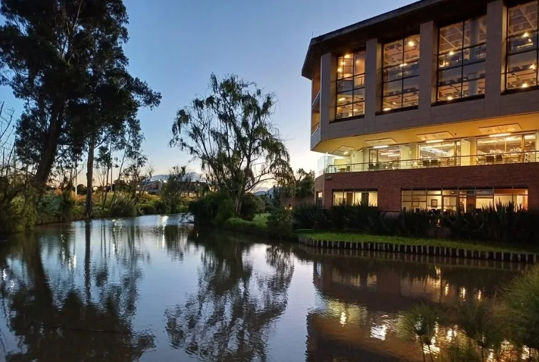
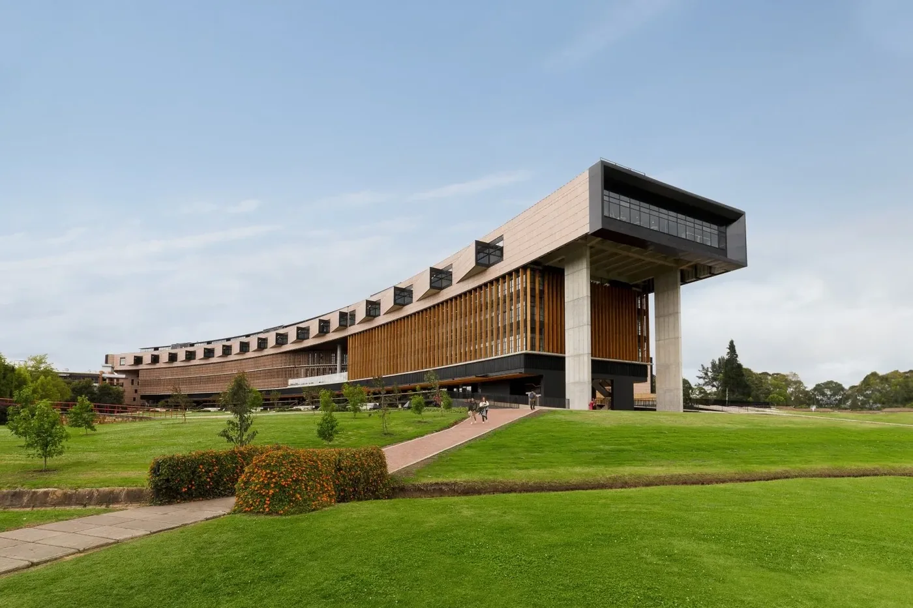
Tu aporte sostiene el Congreso Centenario y las becas para sacerdotes que cursan la Maestría en Teología.
En el formulario de donación selecciona la opción 3 “Becas Fondo Pedro María”.
Entendido, ir a donar